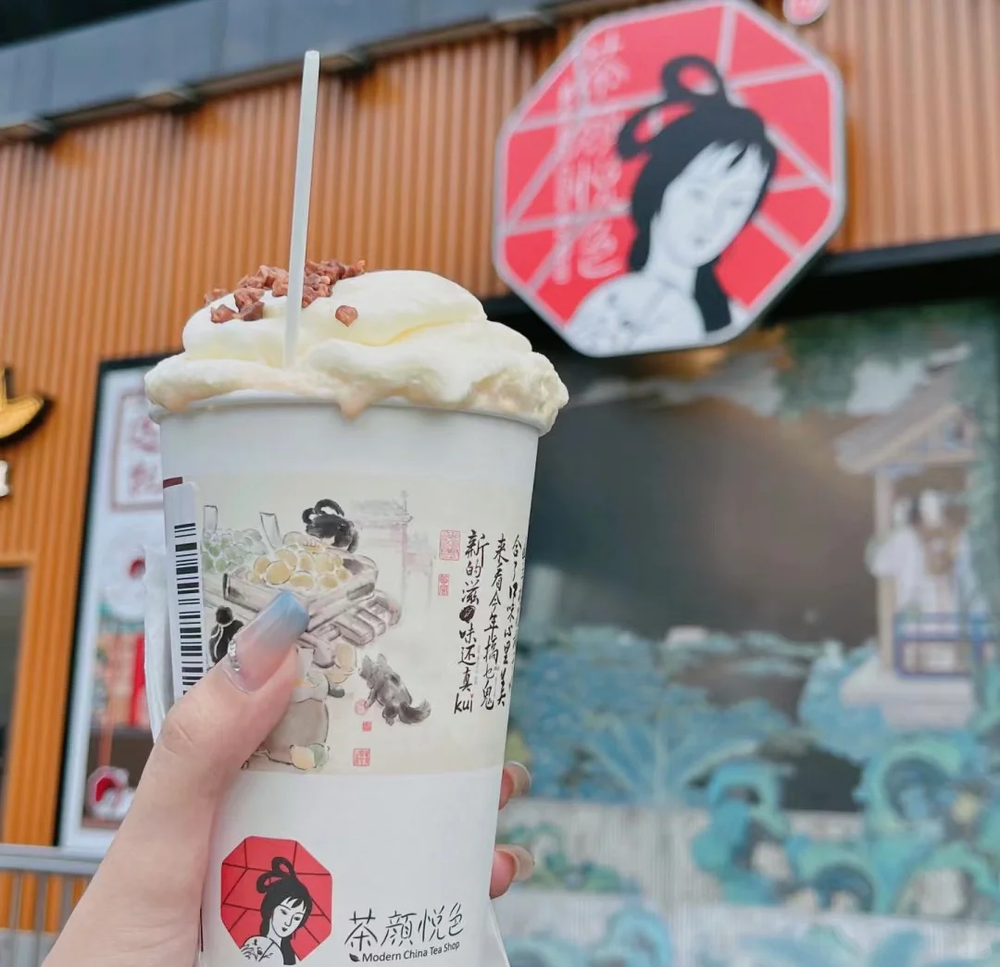
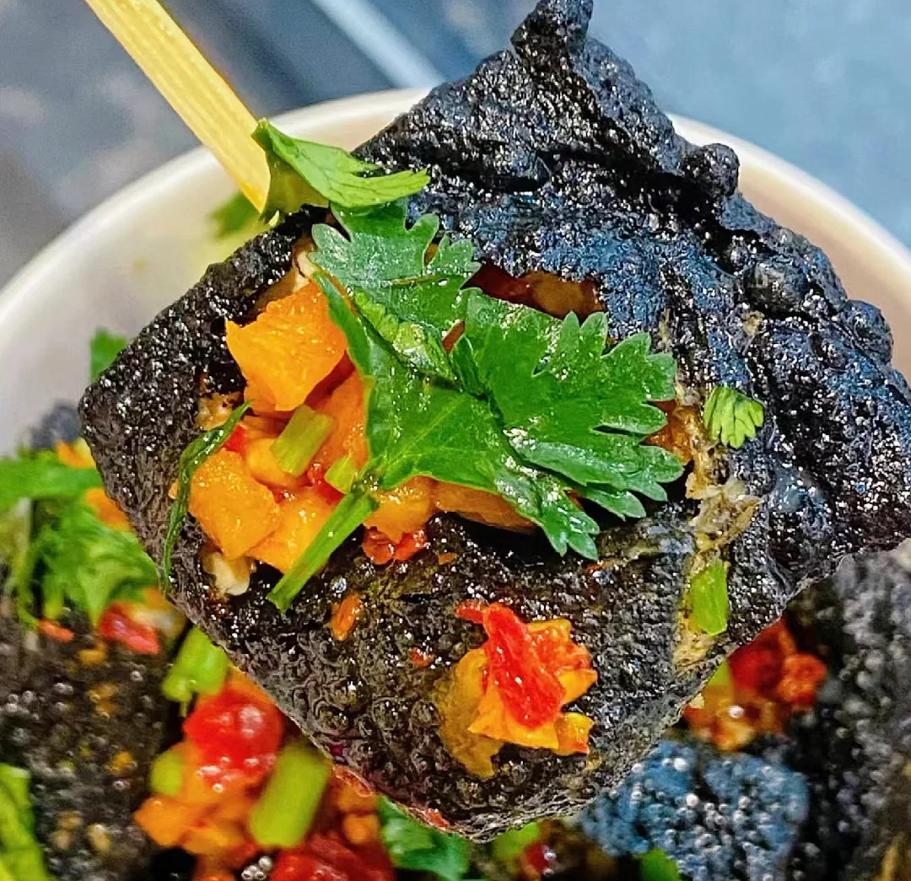
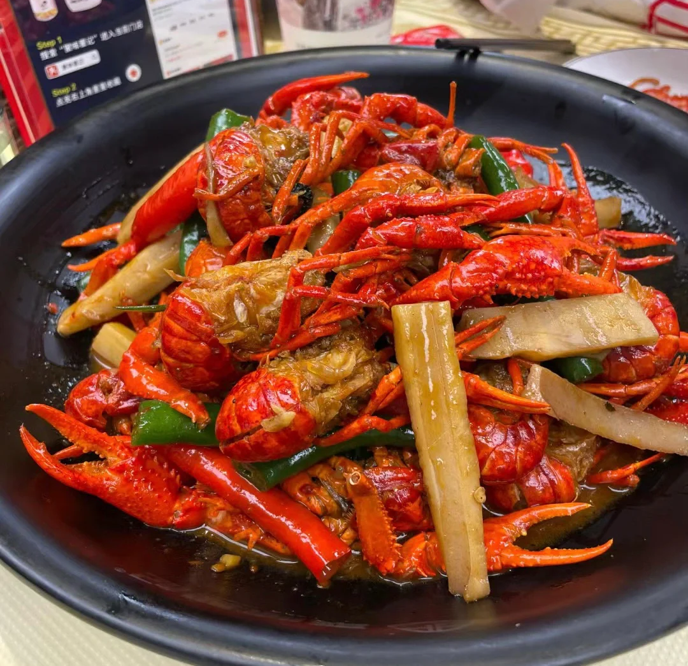
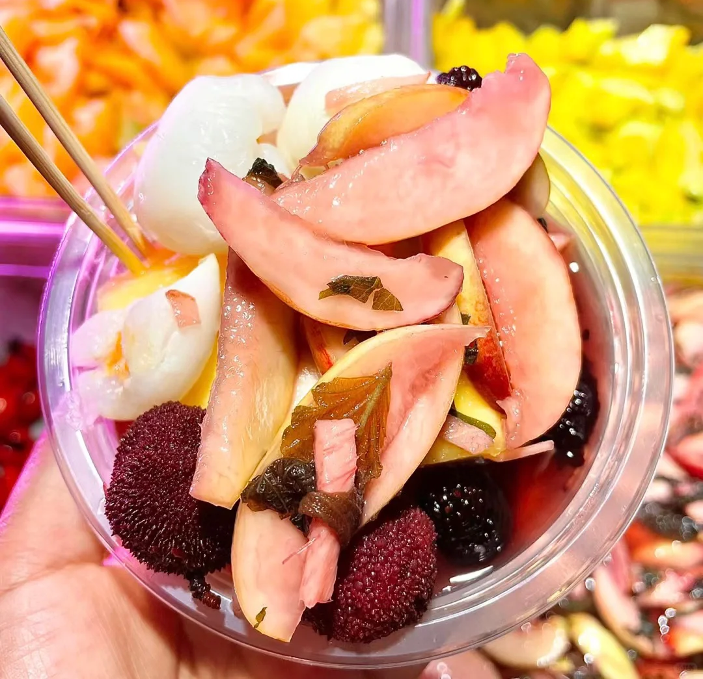
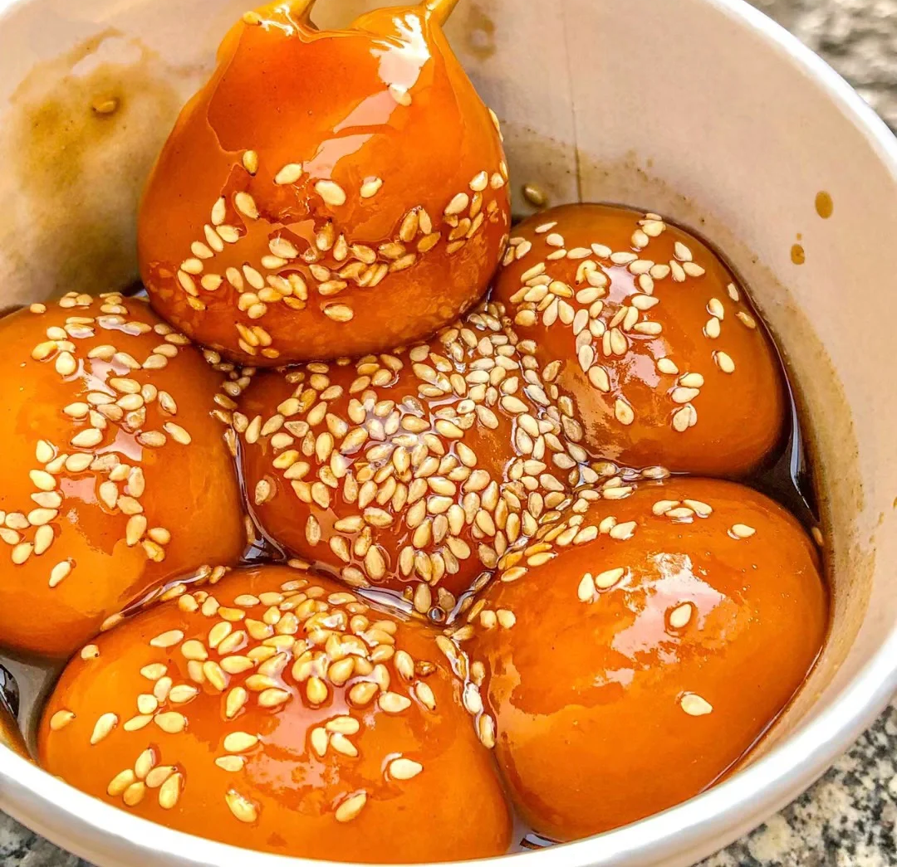
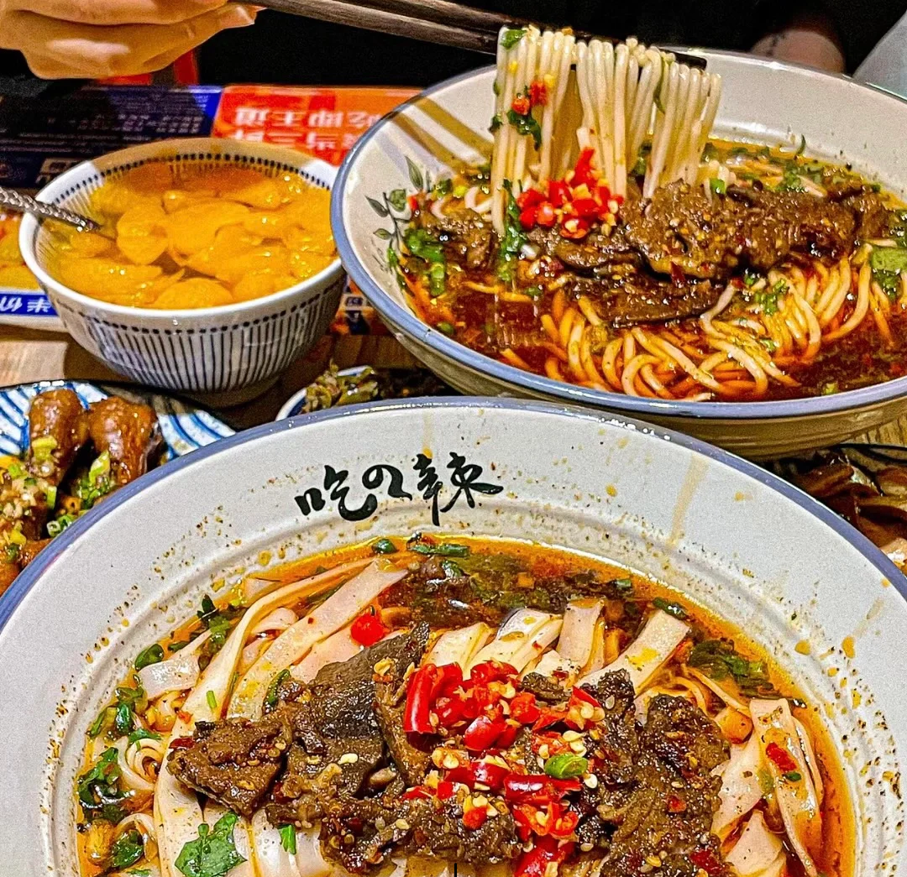

茶颜悦色
只有在长沙才能喝到的奶茶，（现在岳阳、常德也能喝到了）让无数人打飞的来长沙只为一杯茶颜悦色，一己之力撑起长沙网红半边天的代表，来长沙不喝茶颜悦色，那长沙旅游的快乐会减少一半！
推荐：幽兰拿铁、桂花弄、声声乌龙

臭豆腐!
长沙臭豆腐是湖南长沙传统的特色名吃，长沙当地人又称臭干子。色墨黑，外焦里嫩，鲜而香辣。 焦脆而不糊、细嫩而不腻、初闻臭气扑鼻，细嗅浓香诱人。
推荐：文和友老长沙臭豆腐、罗家臭豆腐、五娭毑臭豆腐

小龙虾
口味虾，又名麻辣小龙虾、长沙口味虾、香辣小龙虾等，是湖南省的一道著名传统小吃，属于湘菜系。长沙人对小龙虾的热爱，就这么说吧夏天的时候长沙的空气里都是小龙虾的味道，来长沙还是一定要尝一下的。 推荐：文和友、天宝兄弟、虾小龙。

紫苏桃子姜
只有长沙才有的特色小吃，味道清甜爽口，夏天吃完烧烤后来一碗，清爽解腻。
推荐：东瓜山紫苏桃子姜

糖油粑粑
是长沙民间长盛不衰的小吃。新鲜出锅的糖油粑粑金黄脆嫩，甜而不浓，油而不腻，色香诱人。热气腾腾，一心急就会烫着嘴。
推荐：金记糖油坨坨、心太软糖油粑粑、李公庙糖油粑粑、刘记糖油粑粑、老头子糖油粑粑

长沙米粉
据说，在老长沙长大的孩子，几乎都是嗦粉长大的，他们的朋友圈经常流传着这样一句话：“嗦粉是我起床的动力”。
推荐：肆姐面粉馆、夏记粉店、公交新村粉店、陈记面粉馆、玉林粉店、伍家岭陈记